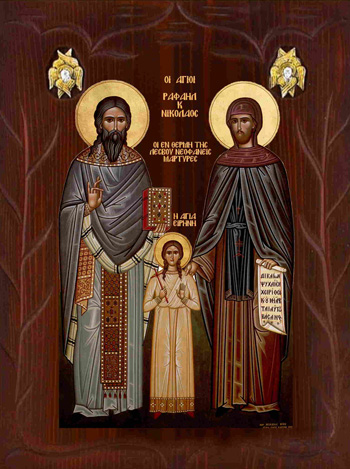
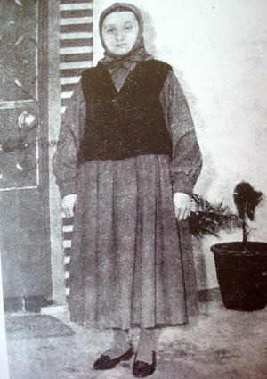

ΣΥΝΤΟΜΟ ΙΣΤΟΡΙΚΟ ΤΩΝ ΑΓΙΩΝ
 Όλα όσα γνωρίζουμε για τους τρεις Νεοφανείς, Θαυματουργούς Μεγαλ/ρες της Μυτιλήνης και την Ι. Μονή Τους, του λόφου Καρυών Λέσβου, αποκαλύφθηκαν (1959-1962) με όνειρα ή οράματα από τους Ίδιους ή την Παναγία ή άλλα πρόσωπα που μαρτύρησαν στον αγιασμένον εκείνο λόφο (1235 και 1463 μ.Χ.).
Ο Ραφαήλ καταγόταν από τους Μύλους της Ιθάκης (σημερινό Περαχώρι), από ευσεβή Χριστιανική οικογένεια. Γεννήθηκε το 1410 μ.Χ. και λεγόταν Γεώργιος, ο δε πατέρας του Διονύσιος Λασκαρίδης. Οι γραμματικές του γνώσεις ήταν πολύ μεγάλες, όπως δε έχει πει σε θεραπευθέντες, σπούδαζε για γιατρός, αλλά τα παράτησε λόγω του στρατιωτικού. Αν κάποιος αρρώσταινε στο Μοναστήρι, τον φρόντιζε εκείνος. Πριν γίνει κληρικός, υπηρέτησε για ένα διάστημα στο Βυζαντινό στρατό, σαν αξιωματικός. Όταν όμως ήταν 35 χρόνων, γνώρισε ένα σεβάσμιον Ηγούμενο, τον Ιερομόναχον Ιωάννη, ο οποίος, με το κήρυγμά του, τον προσείλκυσε στην κατά Χριστόν ζωή. Τότε πίστεψε ολόψυχα στο Θεό κι αποφάσισε να εγκαταλείψει τον κόσμο, γι’ αυτό και παραιτήθηκε από το στρατό. «Εκάρη» μοναχός κι έγινε κληρικός, παίρνοντας τ’ όνομα Ραφαήλ. Για ένα διάστημα υπήρξε Ιερέας και Ιεροκήρυκας στον Ι. Ναόν τού Αγίου Δημητρίου του Μυροβλύτη (γνωστού σήμερα σαν «Λουμπαρδιάρη»), κοντά στου Φιλοπάππου, στην Αθήνα.
Το Πατριαρχείο της Κων/πολης γρήγορα εκτίμησε τα προσόντα του και τον χειροτόνησε Αρχιμανδρίτη, με τον τιμητικόν τίτλον του Πρωτοσύγκελου. Τον έστελνε σε διάφορες θεολογικές αποστολές στο Εξωτερικό, όπως στο Παρίσι και στο Μορλαί της Γαλλίας. Εκεί γνώρισε το Νικόλαο, φοιτητή της Ιατρικής, ο οποίος καταγόταν από τους Ράγους της Μηδίας, αλλά από χρόνια έμενε στη Θεσ/νίκη, με τους ευκατάστατους γονείς του, Γεώργιον και Άννα. Το κατά κόσμον όνομά του ήταν Κων/νος. Ο νεαρός σπουδαστής εντυπωσιάστηκε από τη διδασκαλία και την προσωπικότητα του Ραφαήλ. Εγκατέλειψε την κοσμική ζωή του κι έγινε φίλος και στενός συνεργάτης του. Όταν ήρθαν στην Ελλάδα «εκάρη» μοναχός, πήρε τ’ όνομα Νικόλαος και χειροτονήθηκε διάκονος. Ήταν τότε 27 χρόνων. Πολλές φορές, ο Άγιος Ραφαήλ τον έστελνε σε διάφορα μέρη, για να κηρύξει τον λόγον του Θεού. Για ένα διάστημα έτυχε να χωριστούν, αλλά μέσα στην ταραχή τού πολέμου, ο Θεός θέλησε να ξανασυναντηθούν, όπως είπε χαρακτηριστικά ο Άγιος Νικόλαος. Μετά την άλωση της Κων/πολης, έφυγαν από το λιμάνι της Αλεξανδρούπολης μ’ ένα πλοιάριο της εποχής εκείνης και μαζί με άλλους πρόσφυγες κατέφυγαν στη Λέσβο, που τότε ήταν ακόμα ελεύθερη (1454 μ.Χ.).
Ζητούσαν να βρουν ένα ησυχαστήριο. Ο Προεστός της Θερμής Βασίλειος κι ο δάσκαλος Θεόδωρος τους υπέδειξαν την Ι. Μονή των Γενεθλίων της Υπερ. Θεοτόκου, που βρισκόταν 14 χλμ. από την πόλη της Μυτιλήνης, στο λόφο των Καρυών. Υπήρχε εκεί ένας μοναδικός καλόγερος, ο Ρουβήμ, που σύντομα πέθανε. Σχηματίστηκε τότε μία μικρή Αδελφότητα με Ηγούμενον τον Ραφαήλ, που ανέπτυξε μεγάλη φιλανθρωπική δραστηριότητα και γρήγορα έγινε γνωστός και πολύ αγαπητός σε όλους. Απ’ ό,τι αποκαλύφθηκε, είχε φιλικούς δεσμούς με το δάσκαλο και τον Προεστόν τού χωριού.
Δυστυχώς όμως, το Σεπτέμβριον του 1462 μ.Χ., ο Μωάμεθ Β΄ ο Πορθητής έστειλε στρατιώτες και κατέλαβαν το νησί. Τους πρώτους μήνες οι Τούρκοι δεν πείραξαν το Μοναστήρι. Τον Απρίλιο όμως του 1463 μ.Χ. έγινε κίνημα στη Θερμή κατά των Τούρκων κι αρκετοί Χριστιανοί κατέφυγαν στο Μοναστήρι, για ν’ αποφύγουν τ’ αντίποινα. Μεταξύ τους ήταν κι ο δάσκαλος Θεόδωρος, με τον Προεστό Βασίλειο και την οικογένειά του. Οι Τούρκοι, που πληροφορήθηκαν τα συμβάντα, τη Μεγ. Παρασκευή, την ώρα που γινόταν ο ενταφιασμός τού Χριστού, επέδραμαν στο Μοναστήρι, το οποίο είχε τότε 40 μοναχούς. Συνέλαβαν τον Ηγούμενον και όλους όσους βρίσκονταν εκεί και τους βασάνισαν απάνθρωπα μέχρι θανάτου, για να μαρτυρήσουν που κρύβονταν οι επαναστάτες. Ο Ραφαήλ, χωρίς να δειλιάσει, τους φώναξε με θάρρος: «Σε σας θα δώσω μόνον το κορμί μου, αλλά την ψυχήν μου στο Θεό μου». Σε κάποια στιγμή δε, ενώ βρισκόταν κατά γης και τον έβριζαν και τον έδερναν αλύπητα, πετάχτηκε όρθιος, τράβηξε από το στήθος του ένα μεγάλο Σταυρό και είπε: «Εμείς Αυτόν προσκυνούμε και ποτέ δεν θα τον εγκαταλείψουμε». Αφού υποβλήθηκε σε πολλά φρικτά μαρτύρια, από δύο Μουσουλμάνους, ένα Τσερκέζο, ένα Λαζό κι ένα Τουρκαλβανό, τον κρέμασαν ανάποδα σε μία μεγάλη καρυδιά, κοντά στο αγίασμα, εκεί που τελούσαν κάθε χρόνο την Ανάσταση και τον χτυπούσαν απάνθρωπα για ένα 24ωρο. Στο τέλος, Δευτέρα προς Τρίτη της Διακαινησίμου Εβδομάδας, δύο άτομα τον πριόνισαν μέσα στο στόμα και τον αποκεφάλισαν. Έτσι παρέδωσε το πνεύμα του (53 χρόνων). Όπως δε είπε η Παναγία, κάθε χρόνο τέτοια μέρα κλαίει για τη θυσία τού καλόγερου. Το Νικόλαο, ο οποίος αρνήθηκε να φύγει από το Μοναστήρι, παρόλο που ο Ραφαήλ τού το ζήτησε τρεις φορές, τον είχαν δέσει σε μία μικρότερη καρυδιά, που βρισκόταν απέναντι και τον έδερναν αλύπητα. Καθώς όμως έβλεπε τα μαρτύρια του αγαπημένου του Ηγούμενου, δεν άντεξε άλλο και πέθανε από συγκοπή, χωρίς ν’ αναστενάξει ή να βαρυγγομήσει. Στη συνέχεια σκότωσαν με απάνθρωπον τρόπον το δάσκαλο και την οικογένεια του Προεστού Βασιλείου. Το αγοράκι του, μόλις 11 μηνών, που το είχε βαπτίσει ο Ηγούμενος και του είχε δώσει τ’ όνομά του, το ποδοπάτησαν και το έλιωσαν. Έκοψαν το χεράκι και το ποδαράκι τής 12χρονης κόρης του Ειρήνης, της έριχναν καυτό νερό μέσα στο στόμα και στο τέλος την κάψανε ζωντανή μέσα σ' ένα πιθάρι. Μαρτυρικό θάνατο βρήκε, επίσης, ένα 14χρονο κορίτσι, που λεγόταν Ελένη (τη φώναζαν και Σουζάνα). Ήταν ορφανή, πρώτη ‘ξαδέλφη τής Ρηνούλας κι από τριών χρόνων έμενε στο σπίτι τους. Οι Τούρκοι την κακοποίησαν και πέθανε από τους πόνους και την τρομάρα της. Η γυναίκα του Μαρία, την οποία είχαν δέσει σ’ ένα δένδρο, παραφρόνησε και πέθανε από συγκοπή, παρακολουθώντας τα μαρτύρια των παιδιών της, παρόλο που έκλεινε τα μάτια της για να μη βλέπει. Ο ίδιος βασανίστηκε και κατακρεουργήθηκε απάνθρωπα. Στη συνέχεια έβαλαν φωτιά και κατέστρεψαν το Μοναστήρι (9.4.1463).
Ο Επιστάτης τού Μοναστηριού Ακίνδυνος και ο μοναχός Σταύρος που σώθηκαν, γιατί διέφυγαν στο βουνό, με την προτροπή τού Αγ. Ραφαήλ, ενημέρωσαν αμέσως τον τυφλόν Ιερέα τού χωριού Σάββα, ο οποίος ήταν τότε 112 χρόνων και μαζί με μερικούς ακόμα Χριστιανούς πήγαν τη Λαμπροτρίτη στις Καρυές κι έθαψαν κρυφά τους Μάρτυρες. Τον Ηγούμενο μέσα στα ερείπια της καμένης Εκκλησίας και τους άλλους στο προαύλιο.
Όπως δε αποκάλυψε ο ίδιος ο παπά-Σάββας, όταν έφθασαν στο λόφον των Καρυών, γονάτισε και παρακάλεσε το Θεό να του χαρίσει το φως του, για να τους δει για τελευταία φορά. Πράγματι, όταν ο Ακίνδυνος του έδωσε λίγο αγίασμα και έπλυνε μ’ αυτό τα μάτια του, αμέσως θεραπεύτηκε. Αυτό είναι και το πρώτο μεγάλο θαύμα των Αγίων, αν και - καθώς είπε – θα προτιμούσε να μην έβλεπε, για να μη δει όλα όσα με φρίκη αντίκρυσαν τα μάτια του. Μετά από λίγες μέρες πέθανε, ο δε Ακίνδυνος και ο μοναχός Σταύρος βρήκαν μαρτυρικό θάνατον από τους Τούρκους, που ανακάλυψαν πού κρύβονταν.
Οι Χριστιανοί για πολλά χρόνια ανέβαιναν τη Λαμπροτρίτη στις Καρυές κι έκαναν Λειτουργία κάτω από ένα μεγάλο πρίνο, αλλά σιγά-σιγά τα γεγονότα ξεχάστηκαν. Πολλοί έβλεπαν τα βράδια ένα μεγαλόσωμο καλόγερο να τριγυρνά στο λόφο και πολλές φορές να θυμιατίζει γύρω από τα ερείπια της παλιάς Εκκλησίας, απ’ όπου πολλές φορές ακούγονταν καμπάνες και ψαλμωδίες. Νόμιζαν, πως το μέρος ήταν στοιχειωμένο και το έλεγαν «Καλόγερος».
Τον Ιούλιον του 1959, η οικογένεια Ράλλη, σ’ εκτέλεση τάματος, άρχισε εργασίες για ν’ ανεγείρει το ερειπωμένο Εκκλησάκι τής Παναγίας, που βρισκόταν στο κτήμα της. Καθώς έσκαβαν, βρήκαν ένα τάφο και μέσα ένα άθικτο σκελετό, από τον οποίον έλειπε η κάτω σιαγόνα. Από ‘κείνη τι στιγμή, οι τρεις Άγιοι και περισσότερο ο Άγιος Ραφαήλ, αλλά και η Παναγία, η Αγία Ολυμπία και άλλοι Μάρτυρες άρχισαν να εμφανίζονται και να κάνουν αποκαλύψεις, με όνειρα ή οράματα, σε διάφορα πρόσωπα, μεταξύ των οποίων η Βασ. Ράλλη, η Μαρία Τσολάκη, οι Ιερείς Παχώμιος Σούγιουλτζης και Βασίλειος Μπάμιας, οι αδελφές Δουργκούνα, η Αικ. Λύτρα, ο Άγγελος Ράλλης, ο Κων. Κανέλλος, ο νεαρός Ζαχαρίας Παφλιώτης και πολλοί άλλοι. Το παράδοξο δε είναι, ότι οι περισσότεροι απ’ αυτούς ήταν πολύ φτωχοί, αγράμματοι και ολιγογράμματοι άνθρωποι, πρόσφυγες καταδιωγμένοι από τους Τούρκους, δηλ. ομοιοπαθείς με τους Αγίους, οι οποίοι κατέφυγαν στη Λέσβο μετά την άλωση της Κων/πολης.
Πρόσφυγας στη Θερμή της Λέσβου, από τις Κυδωνίες της Μ. Ασίας ήταν και ο αείμνηστος Μητροπολίτης Μυτιλήνης π. Ιάκωβος, καθώς και ο μακαριστός Φ. Κόντογλου, τ’ όνομα του οποίου είναι άρρηκτα συνδεδεμένο με τα θαυμαστά γεγονότα της εποχής εκείνης, για το λόγο που θ’ αναφέρουμε παρακάτω.
Με την άδεια της αρχαιολογικής υπηρεσίας, σύντομα άρχισαν ανασκαφές στα σημεία που υποδεικνύονταν με θαυμαστό τρόπο σε διάφορα πρόσωπα, οπότε βρέθηκαν οι τάφοι και τα Ι. Λείψανα των τριών Αγίων και της Αγίας Ολυμπίας, καθώς και άλλων Μαρτύρων, το αγίασμα, ένα μολυβδόβουλο δύο όψεων (με την Παναγία και τον Αρχάγγελο Μιχαήλ), το Εγκόλπιο με την Εικόνα του Παντοκράτορα κ.α. Τα συμβάντα γρήγορα διαδόθηκαν μέσω του τύπου και συγκλόνισαν το Πανελλήνιο. ‘Ο,τι αποκαλύφθηκε για την ιστορία του Μοναστηριού, διασταυρώθηκε κι εναρμονίζεται απόλυτα μ΄όσα αναφέρονται στην ιστορία.
Η Ι. Μονή ιδρύθηκε για πρώτη φορά το 800 μ.Χ. από την εξόριστη στη Λέσβο αυτοκράτειρα του Βυζαντίου Ειρήνη την Αθηναία. Καταστράφηκε όμως το Μάιο του 1235 μ.Χ., όταν πειρατές επέδραμαν σ’ αυτήν, όπου ζούσαν τότε 30 καλόγριες.
Κάποιες κατάφεραν να διαφύγουν, αλλά όσες έμειναν βασανίστηκαν απάνθρωπα, κακοποιήθηκαν από τους επιδρομείς και βρήκαν φρικτό θάνατο. Η νεαρή Ηγουμένη Ολυμπία έμεινε στη Μονή, καθώς και η μοναχή Ευφροσύνη, η οποία ήταν πολύ ηλικιωμένη και δε μπορούσε να περπατήσει. Τη γερόντισα την κρέμασαν σ’ ένα δένδρο, έβαλαν φωτιά και την έκαναν στάχτη. Της Ολυμπίας της έκαιγαν τις σάρκες μ’ αναμμένες λαμπάδες κι ύστερα πείρωσαν μία σιδερόβεργα, την πέρασαν από το ένα της αυτί και την έβγαλαν από το άλλο. Καθώς αποκάλυψε, δε μπόρεσε ν’ αντέξει περισσότερα μαρτύρια και παρέδωσε το πνεύμα της. Το Ι. Σκήνωμά Της βρέθηκε καρφωμένο πάνω σε μία πόρτα με πολλά καρφιά, γιατί έτσι αναγκάστηκαν να την ενταφιάσουν οι Χριστιανοί, επειδή το σώμα της ήταν αδύνατο ν’ αποχωριστεί από αυτήν χωρίς φθορά. Πριν πάει στο Μοναστήρι έμενε με τους γονείς της στην Πελοπόννησο, αλλά πέθαναν όταν ήταν 10 χρόνων και την πήρε κοντά της η αδελφή τής μητέρας της Δωροθέα, η οποία ήταν τότε Ηγουμένη στο Μοναστήρι των Καρυών. Στα 19 της χρόνια «εκάρη» μοναχή και στα 25 έγινε Ηγουμένη, όταν πέθανε η θεία της και τη διαδέχτηκε στα καθήκοντά της.
Το Μοναστήρι, μετά από 150 περίπου χρόνια (1433 μ.Χ.), επανιδρύθηκε σαν ανδρική Μονή, από μία πλούσια γυναίκα, τη Μελπομένη, σ’ ένδειξη ευγνωμοσύνης προς την Παναγία, που με το αγίασμά Της θεραπεύτηκε το πόδι του γιου της Ακίνδυνου. Γι’ αυτό έταξε και τον άφησε εκεί σαν Επιστάτη κι έδωσε ένα μέρος τής περιουσίας της για να συντηρείται το Μοναστήρι. Όταν ήταν Ηγούμενος ο Άγιος Ραφαήλ, καταστράφηκε από τους Τούρκους (4/1463), αφού σκότωσαν απάνθρωπα όλους όσους βρέθηκαν εκεί. Επανιδρύθηκε όμως σα γυναικεία Μονή το Σεπτέμβριο του 1962, μετά τα θαυμαστά γεγονότα που αναφέραμε παραπάνω.
Το 1960, ο μακαριστός Φώτης Κόντογλου, ο οποίος πληροφορήθηκε τα συμβάντα από τις Εφημερίδες, μετά από συνεννόηση με τον αείμνηστο Μητροπολίτη Μυτιλήνης π. Ιάκωβο, ανέλαβε να καταγράψει, αφιλοκερδώς, όλα όσα θαυμαστά συνέβαιναν στον αιματοβαμμένο λόφον των Καρυών Θερμής Λέσβου, με βάση τις ενυπόγραφες μαρτυρίες των προσώπων που αξιώθηκαν «υπερφυών» αποκαλύψεων, με όνειρα ή οράματα.
Ο ίδιος φιλοτέχνησε - αφιλοκερδώς - και την πρώτην Εικόνα των Αγίων, μαζί με τον βοηθόν του Κων/νο Γεωργακόπουλο από τη Χώρα Μεσσηνίας. Η Ιερή αυτή Εικόνα λιτανεύτηκε στη Θερμή, μαζί με Ι. Λείψανά Τους, τα Χριστούγεννα του 1960, οι δε Άγιοι τον αξίωσαν να τους δει, για ν’ αποδώσει καλύτερα τη Μορφή Τους.
Το βιβλίο του, με τίτλο «ΣΗΜΕΙΟΝ ΜΕΓΑ», από το οποίον αντλήθηκαν και οι περισσότερες από τις δικές μας πληροφορίες, πρωτοκυκλοφόρησε τον Απρίλιον του 1962, από τους αδελφούς Παπαδημητρίου (Εκδ. «ΑΣΤΗΡ»), οι οποίοι το εξέδωσαν «δωρεάν», προκειμένου τα έσοδα να διατεθούν για την ανέγερση της Ι. Μονής των τριών Αγίων στον τόπον του μαρτυρίου Τους.
Συγχρόνως, με τη δική του επιμέλεια, κυκλοφόρησε από τις ίδιες Εκδόσεις κι ένα βιβλιαράκι τής κας Λύτρα, με τίτλο «Η εν Χριστώ θαυμαστή μεταμόρφωσις της Αικ. Λύτρα..». Ήταν μία ευκατάστατη, κοσμική κι εντελώς αγράμματη γυναίκα, η οποία, εντελώς ξαφνικά, άρχισε να έχει πνευματικήν επικοινωνία με τον Άγιο Ραφαήλ, με την θαυματουργόν ενέργειαν του οποίου απέβαλεν τον παλαιόν άνθρωπον της ματαιότητας και αξιώθηκε φοβερών αποκαλύψεων εκ μέρους Του, οι οποίες συνεχίζονταν μέχρι τα βαθιά της γεράματα.
Στις 11.9.1970 υπογράφτηκε και «Η Πατριαρχική και Συνοδική Πράξις αναγνωρίσεως των τριών Αγίων», η οποία εκκρεμούσε στο Πατριαρχείο πάνω από εννέα χρόνια, παρόλο που οι Χριστιανοί τους τιμούσαν ήδη σαν Αγίους. Ο Ίδιος ο Άγιος Ραφαήλ, με θαυμαστό τρόπο, έδωσε εντολή στον Πατριάρχην Αθηναγόρα να επισπεύσει την Αγιοκατάταξή Τους, όπως προκύπτει από την αλληλογραφία του με την Αικ. Λύτρα, τις επιστολές τής οποίας υπαγόρευε ο Άγιος.
Οι τρεις Άγιοι γιορτάζουν τη Λαμπροτρίτη, γιατί η 9η Απριλίου, μέρα τού μαρτυρίου Τους, πέφτει συνήθως τη Μεγάλη Σαρακοστή και πολλές φορές τη Μεγ. Εδδομάδα, που δε γίνονται «εορτασμοί» Αγίων.
Η μνήμη της Αγίας Ολυμπίας και της Οσίας Ευφροσύνης τιμάται από την Εκκλησία μας στις 11 Μαϊου.
ΑΦΙΕΡΩΜΑ ΣΤΗΝ ΑΙΚ. Π. ΛΥΤΡΑ
 Η Αικατερίνη Λύτρα ήταν μία ευκατάστατη, κοσμική κι εντελώς αγράμματη γυναίκα, η οποία έμενε στα Πάμφιλα της Λέσβου κι από το Σεπτέμβριο του 1961, εντελώς ξαφνικά, άρχισε να έχει πνευματική επικοινωνία με τους τρεις Θαυματουργούς, Νεοφανείς Μεγαλ/ρες της Θερμής Λέσβου. Ιδιαίτερα όμως με τον ΄Αγιο Ραφαήλ, ο οποίος, καθώς της είπε, τη διάλεξε από πολλές οικογένειες (σελ. 24 βιβλίου της «Μηνύματα», έκδ. 2006), για να γίνει δοχείο τής Θείας Χάρης. Αφού, λοιπόν, τη μεταμόρφωσε σωματικά και ψυχικά, μ’ ένα πρωτάκουστο, αξιοθαύμαστο τρόπο, κάτι που προκάλεσε μεγάλη αναστάτωση στο χωριό της, την αξίωσε φοβερών αποκαλύψεων, οι οποίες, «κατ’ επιθυμίαν Του», καταγράφτηκαν σε έξι μέχρι σήμερα βιβλία για τη διάδοση των θαυμασίων Του.
Η κα Λύτρα είναι, ίσως, το μοναδικό πρόσωπο που είχε συνεχή πνευματική επικοινωνία με τον ΄Αγιο Ραφαήλ και μετά τα «υπερφυή» και πρωτάκουστα γεγονότα, τα οποία συνέβησαν στον αγιασμένο λόφο των Καρυών τής Θερμής Λέσβου (1959-1962). Παρόλ’ αυτά, σήμερα δεν είναι τόσο γνωστή στον κόσμο, όσο εκείνη την εποχή, γιατί τα βιβλία της, «κατ’ επιθυμίαν” τού Αγ. Ραφαήλ, δεν κυκλοφόρησαν ποτέ στο εμπόριο και τα περισσότερα διανέμονταν «δωρεάν». Γι’ αυτό θα καταγράψουμε παρακάτω, περιληπτικά, για ενημέρωση των πιστών, τη θαυμαστή διακονία της, για την οποία την είχε συγχαρεί και ο Πατριάρχης Αθηναγόρας:
Με το θαύμα τής τριήμερης αφωνίας της, το οποίο συνέβη το Μάιο του 1962 («Μηνύματα», σελ. 61-64, έκδ. 2006), ο Άγιος Ραφαήλ, όπως ο ΄Ιδιος αποκάλυψε, ώθησε τους Αρμόδιους να ξεκινήσουν την ανέγερση του Ι. Ναού των τριών Αγίων και της Ι. Μονής Αυτών (9/1962).
Το πρώτο της βιβλιαράκι (βλ. παρακάτω), με τη Χάρη των Αγίων, έφθασε στα πέρατα του κόσμου, γι’ αυτό κι ο έρανος που έκανε, με την άδεια του μακαριστού Μητροπολίτη Λέσβου, Ιακώβου Β΄, απέδωσε ένα πολύ μεγάλο χρηματικό ποσό, που διατέθηκε για την ανέγερση του.
Ο ΄Αγιος Ραφαήλ τη χρησιμοποίησε σα μεσίτην, με διάφορους θαυμαστούς τρόπους, προκειμένου να χτιστούν οι Ι. Ναοί του στην Κ. Αχαϊα και στην αγαπημένη του γενέτειρα, στο Περαχώρι της Ιθάκης (Βλ. στο τέλος τού βιβλίου «Απάνθισμα» και στα «Ιερά και εξαίσια Αγ. Ραφαήλ εις Ιθάκην»).
Διαβίβασε μ’ επιστολές, που της υπαγόρευσε ο ΄Ιδιος ο ΄Αγιος, την παραγγελία-διαταγή του προς τον Πατριάρχην Αθηναγόρα για την επίσπευση της επίσημης αναγνώρισης της Αγιότητας των τριών Μεγαλ/ρων και της Αγιοκατάταξης Αυτών στο Αγιολόγιο της «Ορθοδόξου Εκκλησίας», η οποία εκκρεμούσε πάνω από 9 χρόνια στο Πατριαρχείο και κατόπιν αυτού υλοποιήθηκε στις 11.9.1970, όπως προκύπτει από την αλληλογραφία της με τον Πατριάρχη.
Έγραψε τις υπαγορεύσεις τού Αγίου Ραφαήλ, σε έξι μέχρι σήμερα βιβλία, που διαιωνίζουν τα εξαίσιά Του στην Ιθάκη, καθώς και τα μηνύματα, τις διδαχές, τις προσευχές, τις αποκαλύψεις Του κ.α.
Διέδωσε τα θαυμάσια των Αγίων όχι μόνο με τα βιβλία τού Αγίου, αλλά και και με τις αμέτρητες επιστολές που έστελνε, σ’ όλα τα μέρη του κόσμου, σ’ όσους επικοινωνούσαν μαζί της, καθώς και με τις προφορικές αφηγήσεις της στα χιλιάδες άτομα που πέρασαν από το σπίτι της, για να τη γνωρίσουν ή να ζητήσουν τη μεσολάβησή της για κάποιο αίτημά τους προς τους Αγίους.
Τα άτεχνα σχέδια της κας Λύτρα (βλ. αρχή βιβλίου «Διδαχαί»), στα οποία απεικόνιζε τα όνειρα και τα οράματά της, κατά το Φ. Κόντογλου, είναι πολύτιμα για την ιστορία των Τριών Αγίων, γιατί είναι σύμφωνα με την εποχή που μαρτύρισαν (ιστορικώς). Αυτός πρέπει να ήταν και ένας από τους λόγους που ο ΄Αγ. Ραφαήλ της είχε ζητήσει ν’ ασχοληθεί με την αγιογραφία και τη ζωγραφική.
Φιλοτέχνησε την Εικόνα των τριών Αγίων, «κατ’ εντολήν» τού Αγίου Ραφαήλ και την πήγε «κατ’ επιθυμίαν Του» στη γενέτειρά Του, το 1975, για να παραμείνει στον Ι. Ναό τής Παναγίας του χωριού Του. Επίσης, αμέτρητες άλλες Εικόνες, που της παρήγγελναν απ’ όλο τον κόσμο και από τα χρήματα τα οποία έπαιρνε έδινε και για την ανέγερση του Μοναστηριού.
ΤΑ ΒΙΒΛΙΑ ΤΗΣ ΑΙΚ. ΛΥΤΡΑ
«Η εν Χριστώ θαυμαστή μεταμόρφωσις της Αικ. Λύτρα, γραφείσα από την ιδίαν, παθούσαν και ουχί μαθούσαν τα θεία» (οι πρώτες πνευματικές εμπειρίες τής Αικατερίνης, ένα από τα μεγαλύτερα θαύματα του Αγ. Ραφαήλ). Τυπώθηκε το 1962 από τις Εκδόσεις «ΑΣΤΗΡ», με την επιμέλεια του Φ. Κόντογλου («Μηνύματα» σ. 17-48). Εντωμεταξύ, οι πνευματικές εμπειρίες τής Αικατερίνης συνεχίζονταν, οπότε, τόσο αυτές, όσο και οι νέες καταγράφτηκαν όλες μαζί στο επόμενο βιβλίο της.
«Μηνύματα» του εν τη Νήσω Λέσβω Νεοφανέντος Αγίου Ιερομάρτυρος Ραφαήλ, αποκαλυφθέντα εις την ιδίαν. Κυκλοφόρησε το 1965 με την επιμέλεια του Αρχιμανδρίτη Αμβρόσιου Λενή. Αντίτυπα αυτού έστελνε η κα Λύτρα «δωρεάν» στην Ιθάκη, στην κα Αικ. Βλασσοπούλου, προκειμένου να πουληθούν και τα χρήματα να δοθούν για την ανέγερση του Ι. Ναού τού Αγίου, όπως αναφέρει η κυρία αυτή σε χειρόγραφη επιστολή της, που υπάρχει στο τέλος τού επόμενου βιβλίου (εκεί αποκαλύπτει, ότι ο Άγιος Ραφαήλ την έσωσε από βέβαιο θάνατο και τον είδε να ρίχνει επάνω στο κρεβάτι της, στο Νοσοκομείο που βρισκόταν, πολλά αντίτυπα του βιβλίου αυτού).
«Διδαχαί» τού Ιθακησίου Ιερομάρτυρος Αγίου Ραφαήλ, μαρτυρήσαντος εν τη Νήσω Λέσβω. Στην αρχή τού βιβλίου υπάρχουν και διάφορα άτεχνα σχέδιά της, τα οποία ο Φ. Κόντογλου εκθειάζει ιδιαίτερα στις επιστολές του, ο ίδιος δε την παρότρυνε να τα σχεδιάζει και να του τα στέλνει. Σ’ αυτά απεικονίζονται σκηνές από τα μαρτύρια των Αγίων κ.α., όπως τα είδε σε όνειρα ή οράματα.
«Απάνθισμα» διδαχών και μηνυμάτων Οσιομάρτυρος Αγίου Ραφαήλ του Θαυματουργού. Στο τέλος αυτού υπάρχει και η θαυμαστή ιστορία τής ανέγερσης του Ι. Ναού τού Αγίου στην Κ. Αχαϊα, για την οποία έχει γράψει ένα βιβλιαράκι και ο Θεόδ. Πάτσης, οικογενειακός φίλος τής κας Λύτρα.
«Ιερά και εξαίσια Αγ. Ραφαήλ εις Ιθάκην». Περιέχει τη θαυμαστή ιστορία τής ανέγερσης του Ι. Ναού τού Αγ. Ραφαήλ στην αγαπημένη Του γενέτειρα, στο Περαχώρι της Ιθάκης, όπως την κατέγραψε η ίδια, αλλά και τις αδιάσειστες χειρόγραφες μαρτυρίες τού παπά-Γιώργη Τσιντήλα, Ιερέα Περαχωρίου, του Ιωάν. Ματαράγκα, Ταμία τής Ερανικής Επιτροπής κ.α., οι οποίες συμφωνούν απόλυτα με όσα γράφει η Αικατερίνη.
«Υπαγορεύσεις του Ουρανίου Πατρός δια του Μεγαλ/ρος Αγ. Ραφαήλ του Ιθακησίου προς την αμαθή Αικ. Λύτρα κατά το προσκύνημά της εις Ιερουσαλήμ, Πάσχα 1973». (Περιέχει κι ένα μέρος τού βιβλίου «Μηνύματα»).
Παρακάτω σας παραθέτουμε τα εν λόγω βιβλία και σας ευχόμαστε καλή φώτιση:
Όποιος επιθυμεί να βοηθήσει στην μετάφραση των παραπάνω βιβλίων, παρακαλώ να επικοινωνήσει μαζί μας στο neomartireslesvou@gmail.com